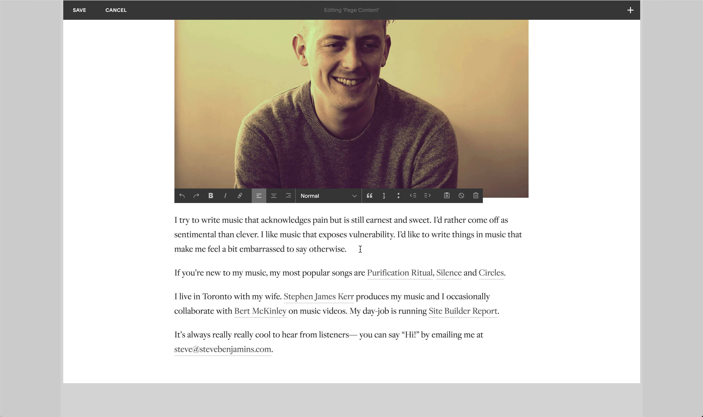
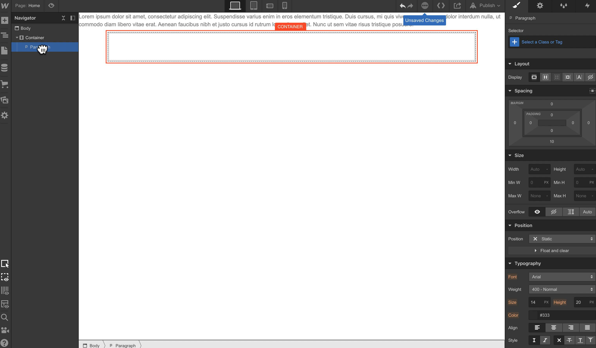
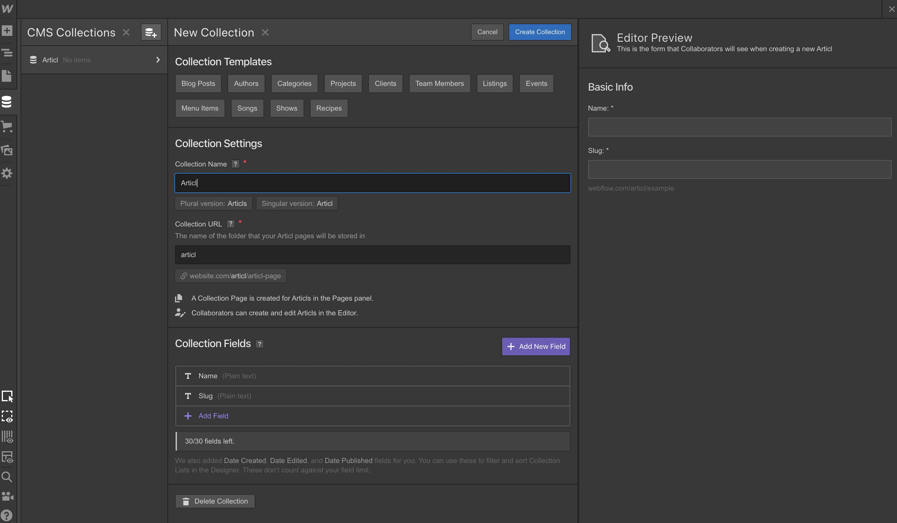
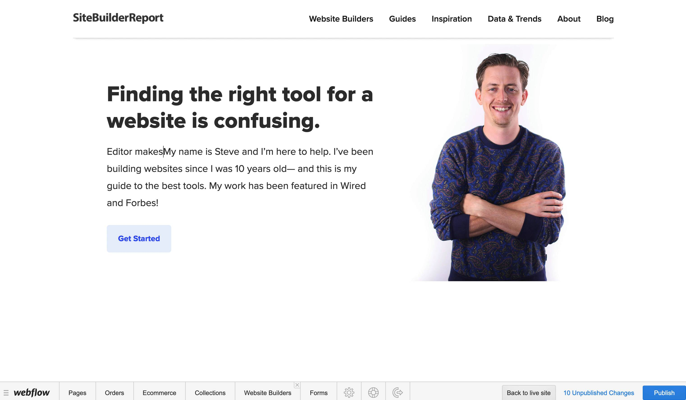
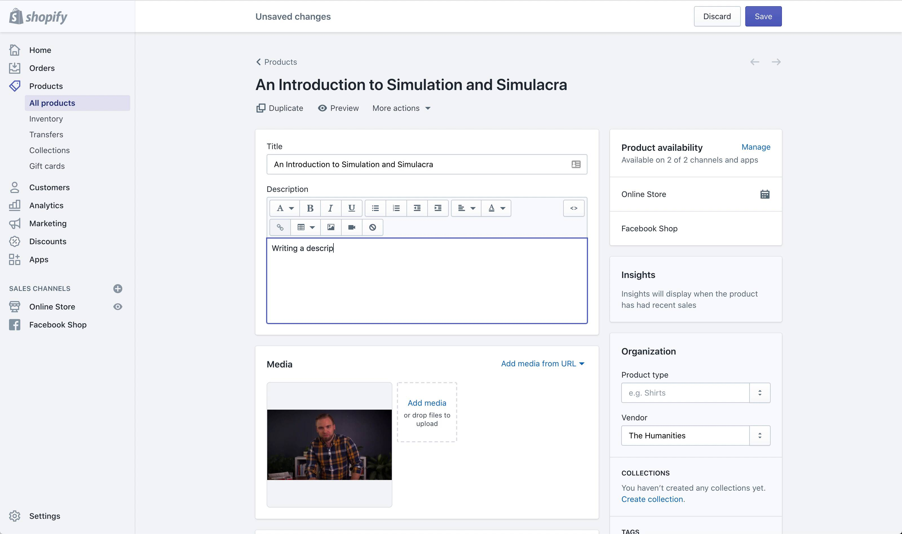
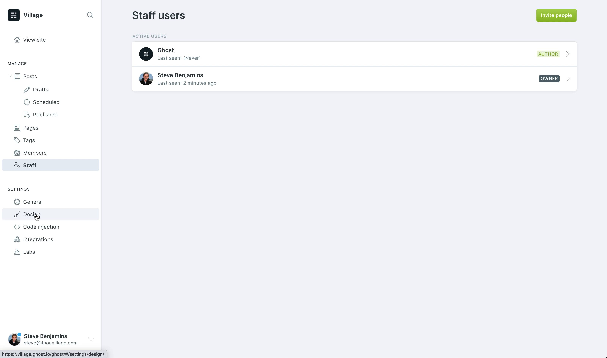
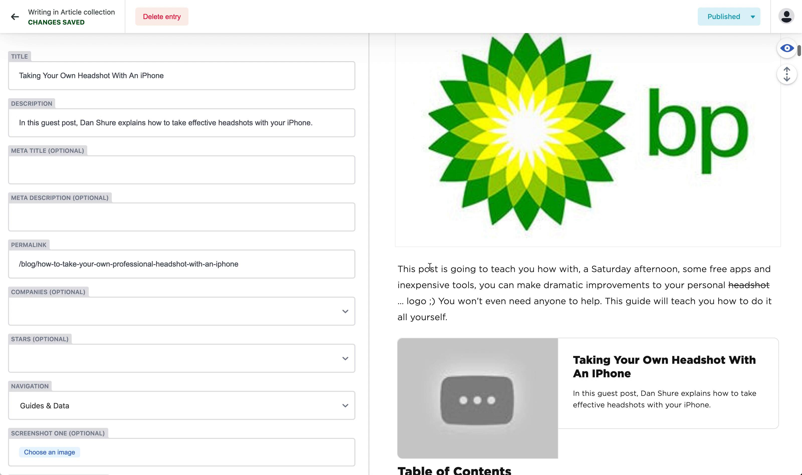

These days there are so many website building tools.
Have all these new options led to the death of once ubiquitously-recommended WordPress? Not at all. WordPress still powers over one-third of all websites and two-thirds of sites that use a content management system (or CMS). However, there sure are new, exciting, and, most importantly, better alternatives to WordPress out there.
I’m going to walk you through ten of the best WordPress alternatives in this article—each with its own unique differences and functionalities that could be a perfect fit for the right user.
But first…
Why Look For WordPress Alternatives in the First Place?

Practically speaking, WordPress doesn’t make much sense for most people and use-cases. Here’s why:
- It’s almost necessary that you know basic coding to make needed changes in WordPress.
- WordPress is just a CMS. Therefore, you have to buy your domain, hosting, theme, and more. You also need to set them up and maintain them (update regularly).
- There’s no official WordPress support team.
- You need to install plugins for most functionalities in WordPress. And if even one of the plugin developers doesn’t do their job right and leaves vulnerabilities, your site is prone to hacking.
Tens of thousands of website owners publicly admit they "hate" WordPress.
Of course, WordPress isn’t all bad, but one of the following alternatives might be a better choice for you.
Side note : Don’t confuse Wordpress.com and Wordpress.org. Wordpress.com is a hosted service, and Wordpress.org is an open source CMS. Wordpress.org is what most people mean when they say “WordPress.”
1. Squarespace
Squarespace is a visual, drag-and-drop website builder. Everything is included out of the box: themes, plugins, hosting, SEO tools, e-commerce, and more. You’ll never have to touch code with Squarespace.
Website builders are a crowded space and Squarespace has many competitors (Wix, Weebly, GoDaddy, etc.), but of all of them, Squarespace is the best that I’ve ever tried.
It’s like the Apple of website builders. Editing pages is intuitive and thoughtful…

Editing pages in Squarespace.
… And they have great taste. Squarespace is known for excellent templates. They often have a recognizable look and feel: bold typography, white space, and plenty of room to showcase photography. Most beautiful-looking websites we come across are made with Squarespace. For example, see these photography websites, art portfolios, or author websites.
Example Squarespace template.
They also have best-in-class features: outstanding blogging (see these Squarespace blog examples), photo galleries, podcast hosting, ecommerce, and more.
Read our Squarespace review to learn more.
Pricing
When paid annually:
- Personal: $16/month
- Business: $23/month
- Basic Commerce: $27/month
- Advanced Commerce: $49/month
Squarespace vs WordPress
- Everything works out of the box. With Squarespace you won’t have to spend hours looking for that perfect photo gallery plugin— it’s already included. Everything just works. The downside is that Squarespace doesn’t have a plugin ecosystem like WordPress with thousands of plugins.
- Hosting included. Squarespace providing hosted so you never have to set up or configure a host. Everything just works. The downside is that you can’t move your Squarespace website to a new host. Your website can only be hosted on Squarespace.
- No code. You won’t ever need to dive into code with Squarespace. With WordPress, you will likely need to. After all, WordPress is a CMS platform and not a website builder.
Try Squarespace →
2. Webflow
If I was still a freelance web designer I would move from WordPress to Webflow.
Here’s why: the Webflow Designer tool. It gives you the flexibility of front-end coding without requiring you to actually code.
Webflow's Designer tool has a learning curve but is highly flexible.
Then you can also integrate a full CMS (and ecommerce) into the Webflow Designer. The CMS lets you create content types made up of fields— for example: plain text, images, dates, colors, and a WYSIWYG editor.
Creating a CMS collection.
Webflow can also be white-labeled and let’s can manage multiple client projects within one dashboard. Plus you can bill clients through Webflow and even upcharge.
There’s also an Editor interface for teams and clients— so no more asking clients to navigate the messy WordPress backend.
Using the Editor.
Pricing
When paid annually:
- Free : The free version comes with a "Made in Webflow" ad.
- Basic : $12/month
- CMS : $16/month
- Business : $36/month
- Enterprise : Custom
- Standard Ecommerce : $29/month
- Plus Ecommerce : $74/month
- Advanced Ecommerce : $212/month
Webflow vs WordPress
- A better client experience. Your clients and team will find the Editor interface much easier than Wordpress’s backend. Plus Webflow includes client billing services.
- Hosting included. Like Squarespace, Webflow provides hosting. The upside of this is that everything just works— you don’t have to think about hosting. Unlike Squarespace, Webflow actually has a WordPress There’s actually a WordPress plugin which lets you publish your Webflow projects on WordPress!
- Similar learning curve. Like WordPress, Webflow has a learning curve. You’ll want to spend a few hours in the Webflow University to get the hang of it.
Try Webflow →
3. Shopify
This one’s more of a “Woocommerce alternative” than a “WordPress alternative”.
I highly recommend Shopify for e-commerce websites. It’s intuitive and flexible.
Editing a product in Shopify.
One key to Shopify is the Shopify App Store. While Shopify’s core covers typical ecommerce features (example: products, discounts, analytics, marketing etc.), the App Store covers everything that is more unusual (example: gift wrap upsells, back in stock notifications).
Shopify's core includes what most stores need— apps are for more unusual features such as back in stock notifications or gift-wrapping upsells.
So many other ecommerce builders are confusing and overwhleming. Just look at Volusion:

Volusion's product editor.
Not Shopify. Because Shopify has an App Store, they keep their core editor clear and intuitive— notice how simple and clean it is by comparison?:

Shopify's product editor.
There’s a lot more to Shopify than just the App Store though. They’ve consistently pushed the ecommerce industry forward with innovative features. Shopify Capital for small business loans, Shopify Payments for payment processing, Shopify Fulfillment Network for shipping and much more. You can read more in my Shopify Review.
Pricing
On monthly plans:
- Basic Shopify : $29/month
- Shopify : $79/month
- Advanced Shopify: $299/month
You can get a 10% discount on annual plans and 20% on biennial plans.
Shopify vs Wordpress / WooCommerce
- WooCommerce. Shopify vs Wordpress is really Shopify vs WooCommerce— Wordpress’s ecommerce plugin.
- Hosting included. Shopify provides hosting— which means you don’t have to worry about security and infrastructure. This also means you can’t move your store off of Shopify’s servers.
- Customization. There are some things that you can’t customize on Shopify— whereas you can customize just about everything with Wordpress. On the other hand things tend to just work with Shopify— for example installing a Facebook Pixel can be frustrating on WooCommerce but is really quick with Shopify.
Try Shopify →
4. Ghost
Ghost is an open source platform like WordPress but unlike WordPress, Ghost is explicitly focused on doing one thing really well: publishing.
WordPress started as a platform for blogs— but it took on more and more over the years and eventually became a huge CMS. That’s not what Ghost wants to become. Ghost wants to just focus on publishing.
Ghost has a clean, minimal writing interface.
I haven’t built any live sites with Ghost yet, but I keep returning to it because it’s got a lot to like for publishers like myself:
- A great writing interface
- The ability to send newsletters
- Membership system to generate revenue for your publication (plus Ghost takes 0% of your sales)
- A growing selection of integrations and themes
- Podcast integration
But more than anything, I just like that Ghost is intuitive. Try Ghost if you’re sick of wading through menus and complex options in WordPress.
Ghost is clear and straightforward. No more wading through complex menus in Wordpress.
Pricing
When billed annually:
- Starter: $9/month
- Basic: $29/month
- Standard : $79/month
- Business : $199/month
Ghost vs WordPress
- Host Anywhere. Like WordPress, Ghost is open source and can be installed on any host— that being said, Ghost Pro Hosting is offered by Ghost and is probably your best option.
- Ghost Isn’t A CMS Ghost is completely focused on publishing. If you’re looking for a CMS, Ghost isn’t a replacement for WordPress.
- Ghost Is Clean WordPress comes with a lot of bloat and extra stuff. Ghost is clean and minimal. It’s a lot like Medium (feel-wise), but it’s open source and there’s no community from the get-go.
Try Ghost →
5. Jamstack
Jamstack isn’t a tool. It’s a whole category of tools. And this is more for developers as Jamstack requires coding.
Basically, Jamstack is a new way of building websites that don’t use server-side rendering. This leads to better performance, security, and developer experience.
That sounds really abstract but in practice it’s actually really exciting. For example, I recently rewrote this website with Jamstack and my Google Pagespeed score went from the 30s to the 90s. Plus I was easily able to integrate with a great CMS (Netlify CMS).
Netlify CMS has made managing this website so much easier!
And there is an explosion of new tools within the Jamstack that you can fit together.
For example, there are tons of static site generators:
These static site generators can be combined with all kinds of new CMS’s:
- Netlify CMS
- Contentful
- Sanity
- … And many more
According to Wes Bros, there are like 16,000+ combinations— so too many for me to cover here— but you should recognize the Jamstack as a legitimate alternative to WordPress!
Pricing
Jamstack is free. However, you’ll need to pay for the platforms that are a part of Jamstack. For example, Netlify CMS’s Pro plan costs $19/month and the Business plan costs $99/month.
Try Jamstack →
6. Wix
Wix is very much like Squarespace, in the sense that both are all-in-one site builders.
Anyone can use Wix templates + its drag-and-drop editor to create a website, blog, or online store without writing a line of HTML, CSS, JS, or PHP.
Websites made on Wix are more customizable than those on Squarespace. That’s because of its unstructured editor and the overwhelming number of options on the editor – it’s a double-edged sword though: if you don’t understand design or uncarefully place elements, you will likely ruin your website. [Read more on Wix vs Squarespace]
Still, compared to WordPress, Wix is a lot easier to use. You can read more in my WordPress vs Wix comparison.
Pricing
For annual plans:
- Combo : $16/month
- Unlimited : $22/month
- Pro : $27/month
- VIP : $45/month
- Business Basic : $27/month
- Business Unlimited : $32/month
- Business VIP : $59/month
- Enterprise : $500+/month
Wix vs WordPress
- Ease of use: The learning curve for WordPress far exceeds Wix. With Wix, you can use templates and the visual, drag-and-drop editor to create make your own website.
- Hosting included: Wix has its own closed ecosystem. Which means sites on Wix are hosted on Wix’s servers. The downside is you can’t download a Wix site and move it to your choice of web hosting. The upside is you can use Wix’s free plan and test the platform/make a website without paying a dime – you’ll at least need a hosting plan to see your live WordPress site.
- Customer support: Because WordPress is free and open source, they don’t include customer support like Wix.
Try Wix →
7. Square Online
Many people prefer WordPress for their websites because it’s “free.” (Of course, they have to pay for hosting, domain name, theme, plugins, etc.)
If “free” was your reason for considering WordPress initially, Square Online is the best WordPress alternative for you.
Square Online is the best free website builder.
- It has an easy-to-use drag-and-drop editor.
- Unlike other website builders’ free plans, Square Online gives you unlimited bandwidth.
- The “Square Online” ad is tiny, and it only appears at the very bottom of your website.
- It offers the most ecommerce features on the free plan of any “free website builder.”
Pricing
For annual plans:
- Free : $0/month (surprise!)
- Professional : $12/month
- Performance : $26/month
- Premium : $72/month
Square Online vs WordPress
- Actually free : Square Online is actually free — the website builder, hosting, ecommerce features…everything is included in the free plan. The downside is your site will be on the (neat) Square Online subdomain.
- Ease of use : You can easily make basic websites on Square Online, thanks to its drag-and-drop editor and professionally-made templates.
- The best free website builder : There are many free website builders. Square Online is the best of them and, therefore, the best free WordPress alternative.
Try Square Online →
8. Joomla
Joomla is an open source CMS just like WordPress. It ranks #2 by market share as a CMS platform if we don’t consider website builders like Squarespace and e-commerce platforms like Shopify into the equation.
Though its popularity is decreasing year over year, it’s a legitimate WordPress alternative.
- It offers more advanced user management than WordPress.
- It has some advanced features (like SEO capabilities and multilingual support out of the box). Plus, it lets you implement a lot of small customizations without relying on third-party plugins.
- You can use multiple templates for different pages on the same website. With WordPress, this simply isn’t an option (unless you use plugin-based page editors like Elementor or Beaver).
And of course, Joomla has templates and extensions like WordPress themes and plugins.
WordPress shines as a blogging platform and easier to use competitor, in comparison.
Pricing
Joomla is free. However, you’ll need to pay for web hosting, templates, extensions, Joomla developer(s), and more.
Joomla vs WordPress
- Joomla is complex : If you are looking for WordPress alternatives because of its steep learning curve, Joomla is not for you. It offers advanced customizations at the cost of being non-user-friendly.
- Plugins: You can find many premium extensions for Joomla and get almost everything you need for your website, but WordPress’s larger ecosystem gives it an upper hand.
- Host Anywhere: Both are open source CMS platforms. Get your custom domain name and host it on your own server or third-party hosting service.
Try Joomla →
9. Drupal
Just below Joomla in CMS popularity contest will rank Drupal. And just like Joomla , Drupal is more complex than WordPress – developers developed it for developers.
In Drupal’s defense, it has more advanced features. For example, Drupal includes a taxonomy system, custom content types, better user permission control, and multilingual functionality out of the box. Thanks to modules and themes, it’s flexible too.
One of the USPs of Drupal is it’s more secure than any other content management system, including WordPress. Hence, it’s a popular CMS for government sites like NASA.gov.
Pricing
Drupal is free, yet perhaps the most expensive. It either demands your time, or you have to pay for the developer’s time and expertise.
Drupal vs WordPress
- Advanced features: Drupal's features like taxonomy, custom content types, and user control makes it a better option for big content sites with 1000s of pages.
- Secure: WordPress’s over-reliance on a third-party ecosystem makes it vulnerable to security threats. On the other hand, Drupal employs enterprise-grade security, making it a great alternative for websites that prioritize security above anything.
Try Drupal →
10. Carrd
One of the common types of WordPress-built websites are personal websites or professional introduction landing pages. Such sites don’t need more than one web page — anyone can effectively introduce themselves, tell their story, showcase their projects, etc., in a single page. For example, see these one page websites.
A single-page website
If you were thinking of using WordPress for something similar (i.e., a one-page website), don’t. You are better off with this WordPress alternative - Carrd.
Carrd is focused on the niche of one-page websites.
- It is much cheaper than the competitors. Plans with custom domains and no ads start at a mere $19 per year. The top multi-page website builders will cost you at least $150 per year.
- Carrd’s themes and features are just for creating one-page websites. So there’s a sense of purpose in the interface. Yes, you can use WordPress or other website builders to build one-page websites, but it never feels as intuitive as Carrd.
Pricing
Annual plans are:
- Pro Lite : $9/year
- Pro Standard : $19/year
- Pro Plus : $49/year
Carrd vs WordPress
- Super cheap : Even mediocre WordPress hosting is ~$5/month. Carrd’s standard plan is $19/year, and it has all the needed features for one-page websites (including hosting).
- Easier to use : There’s a bit of learning curve with Carrd, but compared to WordPress, it’s easy to use.
- Faster development : The initial stages of building a website with WordPress are same whether you build a single page website or a massive website — you have to set up everything from hosting to plugins.
Try Carrd →
Frequently Asked Questions
Is there anything better than WordPress?
WordPress is super-popular, but it doesn't mean it's the best at everything. For example, a website builder like Squarespace is way more user-friendly and practical than WordPress. Similarly, Shopify is a more intuitive ecommerce builder than Woocommerce.
Is WordPress dead in 2022?
Far from it. It's the most popular CMS out there, and it powers over one-third of the websites on the internet.
Is Wix or WordPress better?
For most people, Wix is better than WordPress because there's a steep learning curve to use WordPress. However, if you need flexibility, WordPress is undoubtedly better.
Is WordPress the best for SEO?
It's a common misconception that WordPress websites perform better on search engines. It indeed is SEO-friendly, but in 2022, almost all website platforms are good at search engine optimization. For example, some of these Shopify store blogs attract tens of thousands of visitors.
Why you should not use WordPress?
There are quite a few reasons:
- All functionalities need third-party plugins, which makes WordPress websites susceptible to security and speed issues.
- You need to update themes, plugins, and WordPress itself frequently.
- There's no professional support team for WordPress.
- Your site depends on third parties entirely (i.e., hosting companies, theme developers, plugin developers.)